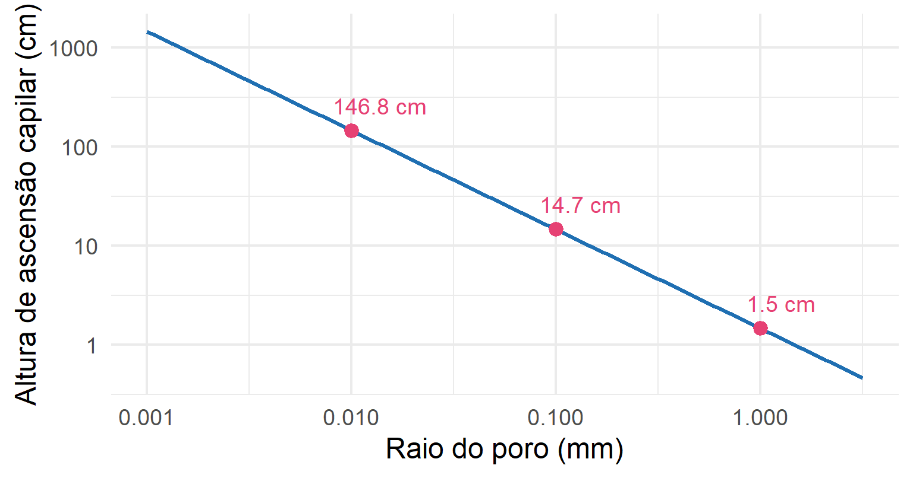
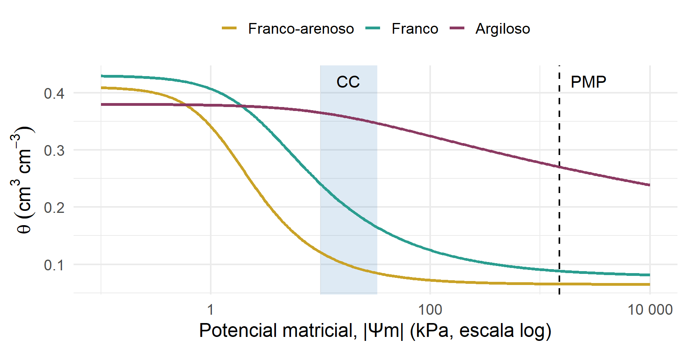
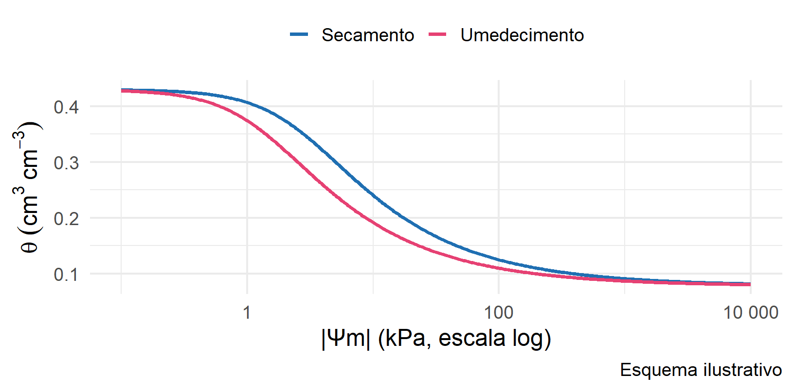
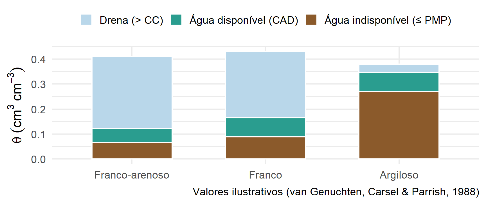

| |Ψm| (kPa) | Franco-arenoso | Franco | Argiloso |
|---|---|---|---|
| 6 | 0.152 | 0.284 | 0.370 |
| 10 | 0.121 | 0.241 | 0.365 |
| 33 | 0.084 | 0.164 | 0.347 |
| 100 | 0.072 | 0.125 | 0.324 |
| 500 | 0.067 | 0.097 | 0.291 |
| 1500 | 0.066 | 0.088 | 0.270 |
Retenção de água e potenciais da água no solo
Instituto Federal do Paraná
Campus Palmas
Curso Superior em Engenharia Agronômica
9 de novembro de 2026
Umidade
\[U = \frac{M_a}{M_s} \qquad \theta = \frac{V_a}{V_t}\]
\[\theta = U \cdot D_s\]
Lâmina de água
\[h = \theta \cdot z\]
1 mm de lâmina = 1 L m-2.
Esta aula responde à pergunta: com que energia essa água está retida, e quanta fica disponível para a planta?
Coesão
Atração entre moléculas de água (pontes de hidrogênio, pela polaridade da molécula).
Adesão (adsorção)
Atração entre a água e as superfícies sólidas das partículas.
Tensão superficial (\(\sigma\)): moléculas na interface líquido-gás sofrem forças não balanceadas e a superfície tende a se contrair. Para a água a ~20 °C, \(\sigma \approx 0,072~N~m^{-1}\).
\[ h = \frac{2 \times \sigma \times \cos(\alpha)} {\rho \times g \times r} \]
Onde:
\[h = \frac{2\,\sigma\,\cos\alpha}{\rho\, g\, r}\]
Leitura física: quanto menor o poro, maior a ascensão e maior a energia de retenção. Poros pequenos retêm água com mais força.

Qual a altura de ascensão da água a 20 °C em um poro cilíndrico de raio 0,05 mm (\(\alpha \approx 0\))?
\[h = \frac{2 \cdot 0,072 \cdot 1}{1000 \cdot 9,81 \cdot 5 \cdot 10^{-5}} = 0,294~m \approx 29~cm\]
Ou seja, a água nesse poro é mantida com uma tensão de aproximadamente -29 cm H2O (≈ -2,9 kPa): é essa energia de retenção que chamaremos de potencial matricial.
\[E_{total} = E_{cinética} + E_{potencial}\]
O estado de referência é a água pura, livre de íons e sólidos, a pressão atmosférica, em um nível de referência. O que importa é a diferença de energia entre dois pontos.
O potencial pode ser expresso por unidade de volume (pressão), de massa ou de peso (altura de coluna d’água):
| Base | Unidades | Exemplo |
|---|---|---|
| Volume | Pa, kPa, MPa, bar, atm | -33 kPa |
| Massa | J kg-1 | -33 J kg-1 |
| Peso | cm H2O, mca (m de coluna d’água) | -336 cm H2O |
Para a água, kPa e J kg-1 são numericamente iguais, pois ρ = 1000 kg m-3.
| 1 atm equivale a | Valor |
|---|---|
| kPa | 101,3 |
| bar | 1,013 |
| cm H2O | 1033 |
| mm Hg | 760 |
A energia potencial da água no solo expressa a quantidade de trabalho envolvido no transporte de água no solo.
\[\Psi_t = \Psi_g + \Psi_p + \Psi_{os} + \Psi_m\]
A água se move do maior para o menor potencial total (rumo ao menor estado de energia, de maior estabilidade).
\[\Psi_t(A) - \Psi_t(B) = (E_A - E_0) - (E_B - E_0) = E_A - E_B\]
A água não vai necessariamente do ponto mais úmido para o mais seco: vai do maior para o menor \(\Psi_t\).
A diferença entre o potencial total da água no solo, na planta e na atmosfera faz com que ocorra o movimento da água do solo até as raízes, das raízes até as folhas e das folhas até a atmosfera.
O que importa é a diferença de \(\Psi_g\) entre dois pontos, que depende só da diferença de altura, e não da escolha da referência.
Referência (z = 0) na base do perfil:
| Caso | zA (cm) | zB (cm) | \(\Psi_{gA} - \Psi_{gB}\) |
|---|---|---|---|
| 1 | 0 | 0 | 0 |
| 2 | 50 | 50 | 0 |
| 3 | 100 | 130 | -30 cm |
| 4 | 130 | 100 | 30 cm |
Só no caso 3 e 4 há diferença de \(\Psi_g\): tendência de fluxo de B para A e de A para B, respectivamente.
Exemplo: lâmina de 10 cm sobre o solo; pontos a 0, 10, 20 e 50 cm abaixo da superfície da água: \(\Psi_p\) = 0, 10, 20 e 50 cm H2O.
Equação de Van’t Hoff
\[\Psi_{os} = -R\,T\,C\]
R = 0,082 atm L mol-1 K-1; T = temperatura absoluta (K); C = concentração (mol L-1).
C = 0,1 mol L-1 e T = 27 °C (300 K):
\[\Psi_{os} = -0,082 \cdot 300 \cdot 0,1 = -2,46~atm\]
\[-2,46 \cdot 1033 \approx -2541~cm~H_2O \quad (\approx -249~kPa)\]
Em solos salinos, o \(\Psi_{os}\) reduz a absorção de água pela planta mesmo com o solo “úmido”.
Em solo não saturado, é o componente que mais importa para o manejo e para a planta.
Cápsula porosa + tubo cheio de água + manômetro de mercúrio:
\[\Psi_m = -12,6\,h_{Hg} + h_c + z\]
hHg = altura da coluna de mercúrio (cm); hc = altura da cuba de mercúrio em relação à superfície do solo (cm); z = profundidade da cápsula (cm); 12,6 = 13,6 − 1 (diferença de densidade entre Hg e água).
Faixa de uso: até cerca de -80 kPa, pois acima disso entra ar na cápsula.
| Faixa de \(\Psi_m\) | Método |
|---|---|
| 0 a -10 kPa | Funil de Haines / mesa de tensão |
| -10 a -1500 kPa | Câmara de pressão com placa porosa (Richards) |
| Menor que -1000 kPa (aprox.) | Psicrômetro de ponto de orvalho |
| Em campo (0 a -80 kPa) | Tensiômetro |
Cada método cobre uma faixa: a curva de retenção completa é montada com a combinação deles.
| Situação | Componentes relevantes |
|---|---|
| Solo saturado | \(\Psi_g + \Psi_p\) |
| Solo não saturado | \(\Psi_g + \Psi_m\) |
| Solo salino saturado | \(\Psi_g + \Psi_p + \Psi_{os}\) |
| Do solo para a planta (não saturado) | \(\Psi_g + \Psi_m + \Psi_{os}\) |
| Células de tecido tenro (planta) | \(\Psi_p + \Psi_{os}\) |
| Células de tecido fibroso (planta) | \(\Psi_m + \Psi_{os}\) |
\[\nabla\Psi_t = \frac{\Delta \Psi_t}{\Delta x} = \frac{\Psi_t(B) - \Psi_t(A)}{\Delta x}\]
Exemplo: \(\Psi_t(A) = -300\) cm H2O e \(\Psi_t(B) = -540\) cm H2O, a 20 cm de distância:
\[\nabla\Psi_t = \frac{-540-(-300)}{20} = -12~cm~cm^{-1}\]
\(\Psi_t\) diminui de A para B: a água flui de A para B. Quanto maior o gradiente, maior o fluxo (Darcy-Buckingham: \(q = -K\,\nabla\Psi_t\)).
Dois pontos em solo não saturado, referência na superfície (\(\Psi_t = \Psi_g + \Psi_m\)):
A: z = -20 cm, \(\Psi_m\) = -150 cm; B: z = -40 cm, \(\Psi_m\) = -100 cm.
\[\Psi_t(A) = -20 - 150 = -170~cm \qquad \Psi_t(B) = -40 - 100 = -140~cm\]
\(\Psi_t(B) > \Psi_t(A)\): a água flui de B para A, isto é, para cima, mesmo havendo gravidade puxando para baixo. O ponto A é muito mais seco e “puxa” a água.

| |Ψm| (kPa) | Franco-arenoso | Franco | Argiloso |
|---|---|---|---|
| 6 | 0.152 | 0.284 | 0.370 |
| 10 | 0.121 | 0.241 | 0.365 |
| 33 | 0.084 | 0.164 | 0.347 |
| 100 | 0.072 | 0.125 | 0.324 |
| 500 | 0.067 | 0.097 | 0.291 |
| 1500 | 0.066 | 0.088 | 0.270 |
\(\theta\) (cm3 cm-3) em potenciais de referência. Valores ilustrativos de parâmetros médios (Carsel & Parrish, 1988).
Textura
Estrutura e matéria orgânica

Para o mesmo \(\Psi_m\), o solo retém mais água ao secar do que ao umedecer (poros de “gargalo”, ar aprisionado, ângulo de contato).
Solo saturado: \(\Psi_m = 0\) e o movimento ocorre por \(\Psi_g\) (drenagem livre). Quando o excesso é drenado e o fluxo descendente se torna desprezível, o solo está na capacidade de campo.
Solo inundado; após quatro dias de drenagem, a umidade média de 0 a 50 cm foi \(\theta_{CC}\) = 0,349 cm3 cm-3.
\[h_{CC} = 0,349 \cdot 50 = 17,45~cm = 174,5~mm\]
Hoje a camada tem 150 mm e ocorre uma chuva de 40 mm:
O PMP é uma convenção; o limite real varia com a espécie e a demanda atmosférica.
Mesmo solo: \(U_{PMP}\) = 0,173 g g-1 e \(D_s\) = 1,46 g cm-3.
\[\theta_{PMP} = 0,173 \cdot 1,46 = 0,253~cm^3~cm^{-3}\]
\[h_{PMP} = 0,253 \cdot 50 = 12,63~cm = 126,3~mm\]
\[CAD = \theta_{CC} - \theta_{PMP}\]
\[CAD = 0,349 - 0,253 = 0,096~cm^3~cm^{-3}~(9,6\%)\]
Em lâmina, na camada de 50 cm: 174,5 - 126,3 = 48,2 mm.
Dos 174,5 mm retidos na CC, 126,3 mm não podem ser aproveitados pela planta.

Nem toda a CAD é facilmente utilizada. Define-se o fator de disponibilidade f (≈ 0,3 a 0,6, conforme cultura e demanda):
\[AFD = f \cdot CAD \cdot z \qquad \theta_{crítico} = \theta_{CC} - f \cdot CAD\]
Exemplo (CAD = 0,096; z = 500 mm; f = 0,5):
\[AFD = 0,5 \cdot 0,096 \cdot 500 = 24~mm\]
Irriga-se quando cerca de 24 mm já foram consumidos, repondo essa lâmina (dividida pela eficiência do sistema).
Dois pontos de um solo não saturado, com referência na superfície: A (z = -30 cm; \(\Psi_m\) = -90 cm) e B (z = -50 cm; \(\Psi_m\) = -70 cm). Qual o sentido do fluxo?
Resposta:
\[\Psi_t(A) = -30 - 90 = -120~cm \qquad \Psi_t(B) = -50 - 70 = -120~cm\]
\(\Psi_t(A) = \Psi_t(B)\): equilíbrio, não há fluxo.
Uma lâmina de 5 cm cobre um solo saturado. Com a superfície do solo como referência, calcule \(\Psi_g\), \(\Psi_p\) e \(\Psi_t\) em um ponto a 30 cm de profundidade.
Resposta:
\[\Psi_g = -30~cm \qquad \Psi_p = 5 + 30 = 35~cm \qquad \Psi_m = 0\]
\[\Psi_t = -30 + 35 + 0 = 5~cm~H_2O\]
Calcule o \(\Psi_{os}\) de uma solução do solo com C = 0,05 mol L-1 a 25 °C, em atm, kPa e cm H2O.
Resposta (T = 298 K):
\[\Psi_{os} = -0,082 \cdot 298 \cdot 0,05 = -1,22~atm\]
\[-1,22 \cdot 101,3 \approx -124~kPa \qquad -1,22 \cdot 1033 \approx -1262~cm~H_2O\]
Um tensiômetro com cápsula a z = 30 cm marca hHg = 50 cm, com hc = 10 cm. Qual o \(\Psi_m\)? Já é hora de irrigar (critério: < -0,06 MPa)?
Resposta:
\[\Psi_m = -12,6 \cdot 50 + 10 + 30 = -590~cm~H_2O \approx -58~kPa\]
-58 kPa ainda é maior que -60 kPa: ainda não, mas a irrigação deve ser feita em breve.
Um solo tem UCC = 0,28 g g-1, UPMP = 0,16 g g-1 e Ds = 1,25 g cm-3. Calcule a CAD e a lâmina disponível em 0 a 60 cm. Com f = 0,5, qual a AFD?
Resposta:
\[\theta_{CC} = 0,28 \cdot 1,25 = 0,35 \qquad \theta_{PMP} = 0,16 \cdot 1,25 = 0,20\]
\[CAD = 0,15~cm^3~cm^{-3} \qquad h = 0,15 \cdot 600 = 90~mm \qquad AFD = 0,5 \cdot 90 = 45~mm\]
Camada de 0 a 40 cm com \(\theta_{CC}\) = 0,27 e \(\theta_{PMP}\) = 0,15. A umidade atual é \(\theta\) = 0,22 e f = 0,5. Já é hora de irrigar? Qual a lâmina necessária para voltar à CC?
Resposta:
\[CAD = 0,27 - 0,15 = 0,12 \qquad \theta_{crítico} = 0,27 - 0,5 \cdot 0,12 = 0,21\]
\(\theta = 0,22 > 0,21\): ainda não é hora de irrigar. Lâmina para repor até a CC:
\[h = (0,27 - 0,22) \cdot 400 = 20~mm\]